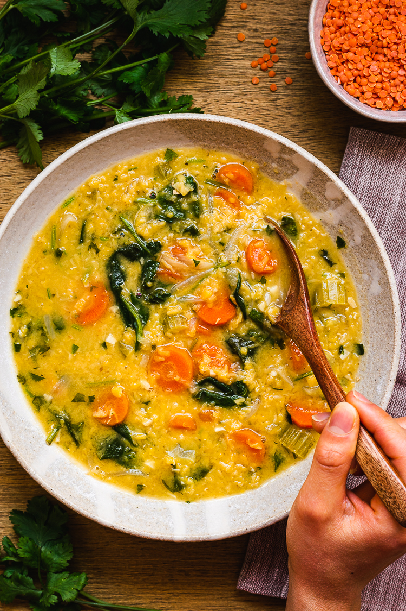

Vegan Curry

Description
Basic recipe for a healthy vegan curry. You can add basically any vegetables that fit your personal taste. Just try yourself out.
Ingredients
- 600g vegetables e.g.
- Carots
- Bell-pepper
- Cauliflower
- Broccoli
- Leek
- 250g Red lentils
- 1 can of coconut-milk
- 4 cloves of garlic
- 1 piece of ginger
- 4 sticks of scallion
- 1 tsp curry-paste
- 2 tbsp neutral oil
- salt
- pepper
Steps
- Cut the vegetables into bite-sized pieces
- Cut the white part of the scallions into small slices
- Cut the garlic and ginger into small pieces (use an onion-chopper if you have one)
- Heat the oil in a large pan
- add the cutted scallions, ginger and garlic in the hot oil
- cook for about 2 minutes (should not get brown)
- add the curry-paste cook for another 2 minutes and stir frequently
- add the vegetables
- add some salt
- cook for 5-10 minutes on medium heat until the vegetables start browning
- add red lentils and coconut-milk
- cook until the lentils are soft and good to eat (usually about 15-20 minutes)
- add salt and pepper to taste